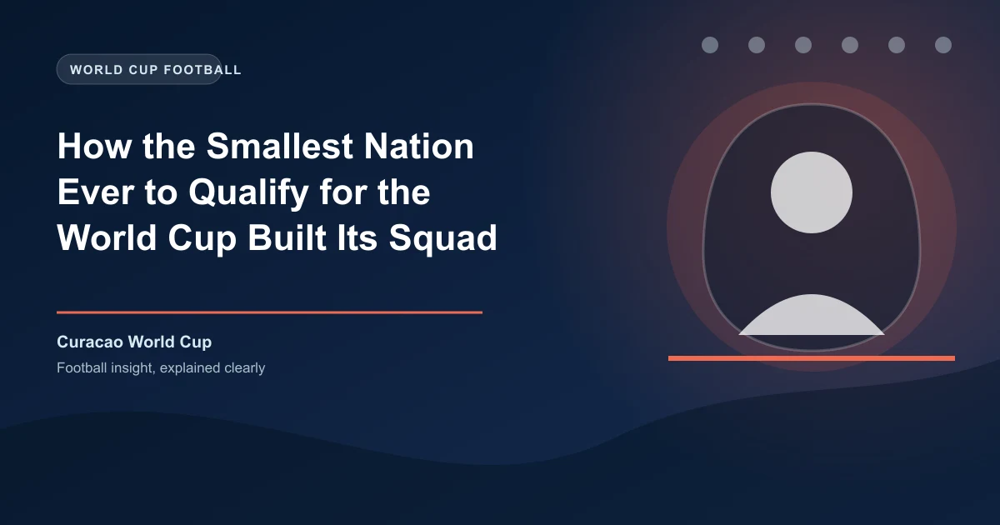

On November 18, 2025, a zero-zero draw in Kingston, Jamaica sent an entire nation into celebration. Not because of a last-minute goal or a penalty shootout. But because that single point was enough to send Curaçao - an island of roughly 156,000 people in the southern Caribbean - to the 2026 FIFA World Cup. In doing so, they became the smallest nation by population ever to qualify for men's football's biggest tournament.
To put that number in perspective: more people attend a single round of Premier League fixtures on a Saturday afternoon than live on the entire island. The NRG Stadium in Houston, where Curaçao played their opening match against Germany, could hold roughly half the country's population. The city of Houston itself has fifteen times as many residents as the island.
So how does a nation this small actually build a World Cup squad? The answer involves a 78-year-old Dutch coaching legend, a diaspora scattered across Europe, a medical center CEO moonlighting as a federation president, and a tournament expansion that finally opened the door.
Curaçao sits about 40 miles off the coast of Venezuela in the Caribbean Sea. It's an autonomous constituent country within the Kingdom of the Netherlands, which means its citizens carry Dutch passports and many of them grow up in the Netherlands rather than on the island itself.
At just 171 square miles, the island is roughly the size of New Orleans. There are at least 125 U.S. cities with larger populations. Football has historically lived in the shadow of baseball on the island, and the national team - nicknamed the Blue Wave - had never qualified for a World Cup despite decades of trying.
Building a competitive football team from 156,000 people presents challenges that larger nations never face. Curaçao's population isn't just small - it's aging. Only 28% of the population is younger than 29, and a full 25% are 65 or older. That's the highest percentage of seniors among the six islands that make up the Caribbean part of the Kingdom of the Netherlands.
For a sport that demands peak physical conditioning, those demographics are brutal. The pool of potential athletes is even smaller than the population suggests.
But Curaçao had one massive advantage: its diaspora. Roughly 81,000 Curaçao-born immigrants live in the Netherlands, and an additional 71,000 people born in the Netherlands have ties to the island. Combined, that's a talent pool that's actually larger than the island's resident population. The key was convincing these players - many of whom had grown up in Dutch football academies and were eligible to represent the Netherlands - to commit to representing a tiny Caribbean island instead.
The Curaçao Football Federation's approach to squad building was straightforward in concept but difficult in execution: find every player with Curaçaoan heritage who was good enough to play international football and convince them that representing the Blue Wave was worth more than chasing a long shot with the Netherlands.
This wasn't entirely new. Nations like Suriname, Aruba, and other Caribbean territories had long sent players to represent European countries. But Curaçao reversed the flow. Instead of losing talent to the Netherlands, they pulled it back.
Many of the squad members who qualified for the 2026 World Cup were raised in the Netherlands, trained in Dutch youth systems, and spoke Dutch as their first language. Some had never even visited Curaçao before being called up. But they carried the island's heritage, and under FIFA's eligibility rules, that was enough.
The federation focused on players who were good enough to play in European leagues but unlikely to receive a call-up from the Netherlands' senior team. This included players in the Dutch Eredivisie, lower English divisions, and Belgian football. By offering these players a pathway to international football at a World Cup - something they'd never get with the Netherlands - Curaçao made an irresistible pitch.
If Curaçao's squad was built on paper through diaspora recruitment, the man who turned it into a team on the pitch was perhaps the most unlikely figure of all: Dick Advocaat, a 78-year-old Dutch coaching legend who became the oldest coach ever to lead a team at the FIFA World Cup.
Advocaat's CV reads like a tour of international football's elite: he managed the Netherlands, South Korea, Russia, Belgium, and Serbia across a career spanning decades. He'd coached at multiple World Cups and European Championships. So why would a man with that resume take charge of a Caribbean island of 156,000 people?
The answer came down to both personal connection and professional challenge. Advocaat saw in Curaçao a project that combined his expertise in organizing smaller nations (he'd done similar work with Serbia) with the romance of a genuine underdog story. He brought discipline, tactical structure, and - crucially - the credibility that attracted other professional players to take the project seriously.
Curaçao's path to the 2026 World Cup was remarkably clean. The expanded 48-team tournament gave CONCACAF three direct qualifying spots plus potential playoff routes, creating more opportunities than the old 32-team format ever would have.
Their qualifying campaign unfolded in two rounds:
| Round | Opponent | Result |
|---|---|---|
| First Round | Haiti | Won |
| First Round | Saint Lucia | Won |
| First Round | Aruba | Won |
| First Round | Barbados | Won |
| Second Round | Jamaica (3 matches) | W, D, D |
| Second Round | Bermuda (3 matches) | W, W, W |
| Second Round | Trinidad and Tobago (3 matches) | W, W, D |
They went 4-0-0 in the first round and 3-0-3 in the second, finishing top of their group with 12 points - one ahead of Jamaica. The decisive moment came in that final match: a 0-0 draw in Kingston that secured their place. A goalless draw is rarely the stuff of legend, but for Curaçao, it was the most important result in the nation's sporting history.
Population: 156,000 (fewer than Iceland's 337,669 when they qualified for 2018)
Land area: 171 square miles (roughly the size of New Orleans)
Stadium capacity: The Ergilio Hato Stadium holds about 15,000 - nearly 10% of the population
First World Cup opponent: Germany (population: 84 million) - a 340:1 population ratio
On June 14, 2026, Curaçao walked out at the NRG Stadium in Houston for their first-ever World Cup match. Their opponent: four-time world champions Germany, a country with a population more than 500 times larger and an academy system that exports players to every major league on earth.
Before the match, Guinness World Records officially recognized Curaçao as the smallest nation ever to qualify for a FIFA World Cup. The ceremony took place just hours before kickoff, adding a layer of ceremony to what was already an extraordinary occasion.
Whatever the scoreline, the sight of those two teams lining up under the same pre-match ritual was the kind of image the World Cup exists to produce. It was proof that the map of world football is being redrawn, slowly, in favor of the places that were once told they were too small to matter.
Curaçao's success isn't just a charming fairy tale. It's a blueprint that other small nations can study and potentially replicate. Several strategic decisions made the difference:
Curaçao's qualification is part of a broader trend that's reshaping the sport. Cape Verde, another island nation with about 525,000 people, qualified for the same tournament. Iceland broke ground in 2018 with 337,000. The 48-team format ensures that these stories will become more common, not less.
For bettors and analysts, these minnow stories carry practical implications. Small nations with diaspora-heavy squads often have unpredictable performance patterns. They can be underestimated by bookmakers who rely on population size and historical rankings as proxies for quality. Curaçao's Dutch-trained players, organized by one of the most experienced coaches in international football, were never the pushovers that conventional wisdom suggested.
When analyzing matches involving small qualifying nations, look beyond population and FIFA ranking. Examine where their players actually play their club football. Curaçao's squad contained professionals from European leagues - a far cry from the amateur setups that characterized World Cup minnows in previous decades. The expansion of the tournament means these "minnows" are increasingly well-coached, well-organized, and capable of causing upsets.
Check our free daily football predictions to apply these strategies.